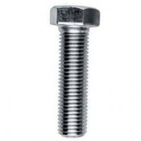
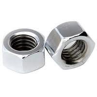
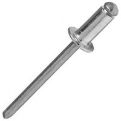
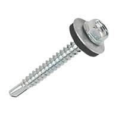

Nails |
Bright Round Wire Nails are by far and away the most popular nail in the UK. It is a general purpose nail and is suitable for a variety of applications. It is most often used to secure roof and floor joists, partitions and heavy duty fencing. |
|
Bolt |
A Bolt is a fastener tool that is used to secure objects together. Usually used with nuts and other Bearings for insertion through holes, there are various kinds of bolts such as hex head, hook bolts, elevator bolts, lag bolts, U bolts, eye bolts, holding down bolts, carriage bolts, and many more. |
 |
Screw Nut |
Determine the maximum torque according to bolt (nut) size and grade. Always consult the manufacturers instructions or engineering recommendations when making bolted connections. |
 |
Rivets |
Diameter 6mm. Length 18mm. Grip range 9.5mm - 13mm. 250 rivets per pack. Quick application and economic cost. Will fit most air, hand and electric riveters. Aluminium with steel pulling mandrel. |
 |
Screws |
Used a shorter version to fix 9 mm plywood to existing 4 drawer cabinets and then used these to go through bottom of new cab's, through ply and into existing cabinets. In my circumstances I pre-drilled a 2 mm hole in the 2 drawer cab's just to stop the screws from 'walking' (a centre punch would have worked just as well). |
 |